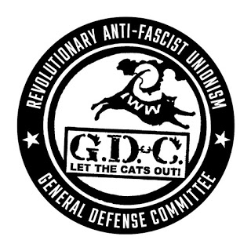

Militant Tactics in Anti-Fascist Organizing--Interview Transcript
Submitted on Fri, 04/28/2017 - 5:23pm
By Matthew N Lyons - Three Way Fight, April 26, 2017
This interview with longtime anti-fascist activist Kieran (who was one of the founders of Three Way Fight thirteen years ago) covers a wide range of topics: from the work of Anti-Racist Action in the 1980s and 90s to the IWW’s General Defense Committee today, from the politics of wearing masks to the dangers of relying on the state for protection, and from engaging organized labor to building community-based self-defense against the far right.
The interview was conducted for KPFA Radio’s Against the Grain by the program’s co-producer Sasha Lilley and was broadcast on February 14, 2017. The audio recording is available for download or online listening here. The following transcription, by Clarissa Rogers, appears with the permission of Against the Grain and the participants.
Kieran was one of the founders of Anti-Racist Action, a youth-based direct action movement that organized against Nazi skinheads, the Ku Klux Klan, and the white power music scene from the 1980s to the 2000s. He’s now chief steward in a local union of telecom workers and is a member of the Industrial Workers of the World’s General Defense Committee, which has taken on anti-fascist work in a number of cities. In late January, a member of the General Defense Committee of the IWW was shot at a Milo Yiannopoulos event in Seattle. Against the Grain, a program of radical ideas originating from KPFA Radio, spoke with him after demonstrators closed down Yiannapoulous’ event at UC Berkeley on February 1st.
ATG: Kieran, many liberals and leftists believe that the right of free speech is paramount. As you know, protestors using militant tactics shut down a Milo Yiannopoulos event at UC Berkeley, which is the home of the Free Speech Movement. Why don’t you think that the right of free speech should be extended to fascists and the far right?
Kieran: There are a couple points to this. I think there’s both a question of strategy and tactics. I think that all of this is with the understanding that what we’re opposing is not the free speech of fascists, or the speeches of fascists. What we’re doing is opposing the organizing of the fascists. So, for instance, in my workplace, I work with workers with a whole range of opinions on all different kinds of questions. And occasionally you’re going to run into people who are influenced by far right politics. In those circumstances it doesn’t make sense for me to start a fight, a physical fight with a coworker since they raised some perspective that comes from that background.
But that’s totally different than a situation where you have an organization or a personality who’s using the framework of a public speech or an event, a forum, in order to advance political goals. And so the way we look at it is the way we would look at any kind of organizing done by that group with those aims.
In the case at UC Berkeley, this outright celebrity and provocateur, Milo Yiannopoulos, very clearly is trying to advance a certain kind of politics and more and more is trying to shape it into a movement. Our understanding is that he was planning to out undocumented students at Berkeley for the sole purpose of putting them under attack by Trump’s immigration forces. And, so, in that circumstance, we can’t let that attack go unchallenged. And I think that when you look at it from that perspective, it makes sense to try and oppose it.
If we just wait until they’ve created the groundswell, or created the base of support for these aggressive actions to take place, it can be too late. And so the way we approach fascist organizing or right wing organizing is not really focused on the question of free speech but is focused on whether or not we’re going to let them organize to implement their program. And our perspective is that we’re not. We’re going to challenge it. We’re going to try to stop it. We’re going to try to stop them.
ATG: Let’s talk about the stakes. On the night of Inauguration Day, a member of the Industrial Workers of the World was shot in the stomach by a Milo Yiannopoulos supporter in Seattle. What do we know about what happened there and the condition of the man who was shot?
Kieran: Yeah, that’s correct. On the night of the inauguration, Yiannopoulos was speaking at the University of Washington in Seattle and there was a mass demonstration against him that included a range of political forces. And there was also a number of supporters of Trump and Yiannopoulos who were there as well. So there was a fairly confrontational scene happening outside of Yiannopoulos’s talk. And in that situation, my understanding (I wasn’t there), but my understanding was that one of the right wingers started to spray mace or another chemical at the anti-Trump, anti-Yiannopoulous forces, and that a member of the IWW and the General Defense Committee tried to intervene to stop that person from doing that, and was shot in the stomach, as you said.
It was a life-threatening injury. He was in the ICU for many days. He’s incurred at least two surgeries. So it was a deadly attack. And as of now, there have been no charges brought against the person who did it. Again, our understanding from media reports is that the person that shot him went to the police and gave a statement, and was released without any charges. And so, of course, this is sort of a bad sign for where things are at right now, that we take very seriously. Because as it stands what it appears is that some people are going to walk away from this with the idea that anti-fascists can be shot without consequences. And that’s very dangerous.
ATG: And in fact, that’s been the case. This past summer, there was a confrontation between white supremacists and radicals in Sacramento, California where a number of people were stabbed and there were no consequences.
Kieran: Right. I think that just points to a broader point, which is that we can’t rely on the law enforcement, on the state, to either defend our communities or defend anti-fascists. Some anti-racists have a perspective of wanting to try and call on the state to carry out justice and our approach is a little different. We come from it with an understanding that the state is not neutral. That the state is built on the foundation of a history exploitation and oppression, and represents the folks who are at the top of that system, and defend their interest. So when we’re organizing, we don’t do so from the point of view of trying to get the state or the police to protect us or to find justice for us, but instead we try and build movements that are self-reliant and are based on community self-defense, on popular self-defense.
ATG: There’s been a lot of debate amongst progressives and leftists about the use of militant tactics. Some of this is a continuation of debates that came out of Occupy, some of this goes even further back, but there are a lot of conflicting opinions. There’s no unity whatsoever amongst the left about the use of militant tactics, whether property damage or the shutting down an event. Are there times when militant tactics aren’t called for? Do they need to be considered strategically among other possible tactics?
Kieran: Yeah. I think all of this is a question of tactics. So that being said, I think we have some underlying principles, as well. And that those inform the tactics that we would draw from in order to organize effectively. And you can imagine lots of different situations where you’re encountering the right or the fascists, where either you don’t have the means to effectively disrupt their activity and their organizing, or you want to sort of put a larger emphasis on trying to undermine their ability to develop their base. And so there’s a few things, and it’s never been just a question of militant tactics. Militant tactics is a part of our strategy, but it’s not the only part.
A big part of it is a battle for the hearts and minds that the fascists are trying to recruit for their base. So we’ve always, along with militant tactics against their organizing, have also tried to engage with the communities that the fascists are targeting. And that can be from interviews or leafletting, to building cultural events like shows with bands, to trying to connect with the people in those communities that already have an anti-fascist impulse possibly because of their identity or how they see the world. But we try and bring a message that this program that the right wing and the fascists are selling is not in our interest as working class people. And that it is a dangerous and divisive one, and that it’s going to lead to a common catastrophe if enacted. And in fact, many of the concerns people have would be better served by organizing a united multi-racial, multi-cultural, anti-fascist movement that challenges the system.
ATG: One of the things that comes up in these debates--and not just from liberals, but also from others on the left--is that militant action can actually be alienating for those who would like to build larger grassroots opposition to the right. How would you respond to that?
Kieran: I’ve heard those arguments a lot. And I think it’s true that sometimes there’s poorly organized, or militancy that’s not well thought out. But I hear that argument, oftentimes from people who are really upset with how the mainstream media covers us. Or how the more moderate tendencies within the social movements react to it. While those things are important to be mindful of, I think that there’s also a question of people beyond the current left. People in working class communities. People who are already suspicious of what the mainstream media tells us. And I just think that it’s a fact that most working class people respect folks that stand up and are willing to defend themselves, and are willing to take risks. And so, you can watch a news report in which anti-fascists, or anarchists, or radicals are being condemned, but people receive that information in all different kinds of ways. People that are already suspicious of the way the mainstream media talks about anything, are likely to have a more positive response seeing a group of people standing up and fighting back.
So I think that we have to be really careful about arguments like that, because I think it tends to try and reduce all of our tactics to whatever the most moderate elements within the movement are willing to support. And that’s just not a recipe for building the kind of movement that we need. And it’s not a recipe for bringing in the most marginalized people, the people that are feeling sort of the knife’s edge of the system the most, because those folks already have an antagonistic attitude towards the system and towards these racists. And so if we’re serious [about] including those folks in our movements, then we can’t take a sort of moderate attitude towards them. When the racists and fascists are organizing, we have to be ready to stand up and fight.
ATG: I’d like to ask you about Anti-Racist Action, a youth-based militant direct action movement which organized against Nazi skinheads in the white power music scene and which you co-founded. It was started in the 1980s and lasted through the 2000s. How broad was it? And what sort of work did it do? There’s a renewed interest in it now.
Kieran: It started out sort of spontaneously in this sense. In the mid to late 80s, largely within the punk scene in the US and Canada, there was a sort of polarization politically that happened. And so, around the same time in many cities there were white supremacists and Nazi gangs formed. They were influenced by Screwdriver (which was a Nazi skinhead band, I should say), and the fascist politics of the National Front in Britain. And in response to that, or sometimes ahead of that there were groups that considered themselves militantly anti-racist and anti-fascist, and these two sets of groups could not coexist for long within alternative scenes, within the punk scene.
So there was a struggle that went on simultaneously in a number of cities, and the anti-racists who often started off as anti-racist skinheads and some punks, and some anarchist activists found each other after a while, either through touring with bands or through the letters column in Maximum Rocknroll, or by corresponding with each other, and started to network, started to build. So Anti-Racist Action was the organizing expression of that spontaneous organizing that happened in the youth culture scenes in North America.
Then, over the years it did broaden out to include people that didn’t come from those scenes that came from other subcultural scenes like graffiti, or young feminists, and hip-hop. It started to take on other issues, too, related to racism and white supremacy. So you had Anti-Racist Action chapters that organized Copwatch patrols against police brutality; participated in protests against police violence; helped defend abortion clinics from the far-right Christian right; and a number of other fronts that Anti-Racist Action was active in. So at its peak, it included several thousand mainly young people in North America who were self-organizing in their cities and in their scenes, and putting out zines and holding benefit concerts, and really, any time the fascists tried to make a move, resisting them.
At one point in the 90s, one of the major Ku Klux Klan groups tried to organize a series of rallies across the Midwest. They did this over the course of a few years, in little towns and big towns in Ohio, and Indiana, Wisconsin, Michigan. Anti-Racist Action was key to organizing resistance in all of those places. That meant, also, being in those small towns and talking to people, mainly young people in those towns and trying to connect with them. That was successful.
There was a number of ARA chapters in small towns as well as the big cities where the left is stronger. I think Anti-Racist Action, which had plenty of problems as all movements do, can really say that it helped restrain and deliver some defeats to fascist organizing in the US.
ATG: How seriously did the far right take the work of Anti-Racist Action? Did they see it as a genuine threat to their organizing?
Kieran: Absolutely. We were the major force that they had to deal with in terms of opposition on the streets. So they were very conscious of Anti-Racist Action. In every locality there would be conflicts, and there were many people who were harassed or intimidated, who might have gotten their homes graffittied, or phone calls to their parents with threats from the fascists. They definitely saw us as an obstacle to their ability, especially their ability to organize openly and in the public, and in contested public space.
I suppose the peak of this was in Las Vegas in 1998, I believe, on the 4th of July weekend a couple of anti-racist skinheads, one who was African American and one who was white, both of whom were well-known in the scene and active in Anti-Racist Action were kidnapped by a gang of white supremacists, and tortured and killed and left in the desert. So there were people that died fighting, being a part of this movement. That really hangs heavy for me and the other people that have been part of this, as does the shooting in Seattle, when you hear people complaining about the possible violation of Milo Yiannopoulos’s rights.
ATG: Let me ask you a question of clarification. You’ve mentioned anti-racist and anti-fascist skinheads several times. I think for a lot of people, when they hear the term “skinhead” they assume that’s synonymous with fascist and racist, and not anti-fascist and anti-racist.
Kieran: Yeah, sure. Skinhead culture came to the US mainly from the influence of British music, bands. The initial skinhead cultural scene from England, and the bands that were most popular within it, was a multi-racial scene, heavily influenced by Jamaican immigrants to England. So the skinhead identity has always been contested. Anti-racist skinheads make a strong claim that in fact the original skinhead identity was not a racist one, and was a multi-racial one. In the US, among the original chapters of anti-racist action, and the original fighters against white supremacist skinheads were a number of youth of color. So there were African American skinheads. In Chicago, there were Puerto Rican skinheads. In Milwaukee. There were Native American skinheads in Minneapolis, and they were a big and important part of the struggle that happened against the racists.
ATG: Let’s take things up to the present, looking at the lessons that can be drawn from the decades of work of Anti-Racist Action for the current situation where, with the Trump administration in power, you have an emboldened far right. Part of that far right, the alt right, is operating less on the streets and more on the level of propaganda on the internet, but then there are certainly groups on the ground as well. Can you tell us about the General Defense Committee of the Industrial Workers of the World and your political approach to countering fascist and racist forces on the ground?
Kieran: Definitely. I think you’re right in describing the situation right now--that we’ve gone from a situation where we were concerned about the growth of particular fascist and white supremacist organizations, and their movement building to a situation where all of a sudden, particularly through the alt right, there’s suddenly this mass propaganda and mass distribution of fascist ideas, so it’s no longer just about the growth of a neo-Nazi group in a certain town, but it’s the fact that the college Republicans on your campus are peddling alt right ideas. Also that that’s circulating on social media, and that it’s become a part of the public debate in a way that the neo-Nazi groups and Ku Klux Klan groups could never quite achieve in the past couple decades.
So that is a serious situation, and I think the thing that the GDC brings to this, is trying to formulate, is trying to connect the ideas of community self-defense, popular self-defense, popular anti-fascism with the idea that we need to cultivate a working-class base. That it can’t just be a squadron of elite anti-fascist carrying out a technical operation that’s going to win this. That we need to get the masses of working class people in our milieus from all different kinds of communities and identities together. That’s what it’s going to take to defeat the politics that Trump is putting forward in the system that gave birth to it.
I think that while we are proud to be militant anti-fascists, and we take that identity seriously, and we take those tactics seriously, we don’t want to marginalize ourselves, we don’t want to be what Lorenzo Kom’boa Ervin called a vanguard versus vanguard where people just see two street gangs fighting with each other, and don’t really see their needs or demands met by either one of them. Instead, we want to try and organize ourselves and our coworkers and our neighbors into a popular response to the fascists. One that, when we take action, we’re not just doing it on behalf of a small cadre of people but that it’s really an expression of a community, and of the working class as a whole.
ATG: How do you do that in practical terms?
Kieran: Well, I think, in many ways, it’s how we talk about it. It’s who we try to involve in our actions. It’s the way we report about and the way that we sum up our actions. The way we decide if we’re successful or not. So it’s not just purely a question of are we able to disrupt their organizing on this day? But it’s also a question of were we able to help develop a base within this community or within this working class that is going to be able to continually be able to confront the fascists and make it a hard place for the fascists to organize and grow?
Some concrete examples of that might be when neo-Nazis plan to organize against an anti-racist program that was being held by a local YWCA in Minneapolis a few years ago, we took that as an attack on the community. We organized leafletting in the neighborhood. We encouraged the neighbors to come out, the community to come out. We held a public meeting. So we gave a chance for people from the neighborhood and from different other organizations to become part of the organizers of the counter-action. There were some reformist leftist groups that came and really argued against any militancy. We argued with them in the open meetings so that there could be a community judgment about which tactics were best.
Myself, I coached soccer--youth soccer--in the parks here in Minneapolis and I let other parents from the folks that I coached with, let them know about this since it was in our neighborhood. And I distributed information about it at work, and brought out coworkers to it. So our attitude is that we want to build a popular defense against this. The fascists attack not just a small group of people, but really are against huge communities, and against the class as a whole. It weakens the class as a whole. So we want to have a popular response.
I think some folks, many folks--on both sides--try to divide the concept of a mass response with a militant response. That it’s only possible to do one or the other.
I think we really want to challenge that. We think that what’s needed is both. And that’s not easy. There’s no simple formula to it. We’re going to need to experiment. We’re going to get some things wrong. We’re going to bend the stick too far one way or the other, undoubtedly, but that’s our goal. To build a mass, militant movement that includes lots of people and that uses lots of tactics in order to confront this threat.
ATG: Frequently, when people are involved in militant actions, they wear masks or take other steps to keep from being identified by the police or the far right. But what if that anonymity allows people to become vigilantes, unaccountable to other radicals for their actions? In your experience, how has this tension between militant action and accountability been addressed?"
Kieran: The question of masks is one that there has been some debate around within the General Defense Committee and the broader circles we participate in. But I'm not sure that accountability is the main issue. I agree that there should be some kind of accountability by individuals and groups to the broader movement (and, I would say, to the working-class base) but what that accountability is - is open to debate. For instance some sections of the movement insist on strictly legalistic framework and use the argument that anything outside of a strict legalism threatens the most vulnerable and oppressed. We should challenge that argument--when real, sustained militancy erupts it is almost always from those who feel the pressure the most--if others join in, that is an important act of solidarity. And we should reject "accountability" to the law or to forces inside the movement who would turn people over to the authorities.
But it is true I think that groups and individuals should be answerable in some form to their tactical decisions - but this is not just true of masked-up militants, but of everyone in an action. People should be accountable for working with the police (an act that endangers us), or for the political line that they project on banners, flyers, or chants etc. In other words ALL tactics should be open to debate and criticism.
To get further at the specifics of your question--masks may hide an individuals identity and therefore prevent that particular individual from being "accountable", but generally people in political movements, especially if they've been around for a while, have an idea of the different forces involved and not knowing an individual's name has never stopped folks from (rightly or wrongly) criticizing actions.
The question we've been debating here about masks is a little different. We've been debating whether they are actually effective for security. Now we aren't arguing about whether they are effective at concealing your identity--lets say they are. But we've noticed that if you are a smallish group of people all masked up in a larger demo--the police will actually focus on you--instead of becoming camouflaged, you are actually in the spotlight. The cops may not immediately know who you are but if they focus on the masks, they can just wait until an opportune time and surround and detain the masked-up people and ID or arrest them. We've seen this happen a couple of times.
This speaks to what actually provides security--I would say it is having a real working-class base of support for your organizing, for your projects. Regular people that have a stake in the organizing, that understand the need for militant action, that are willing to stand up and defend each other both politically and physically - that give a shit if one of their friends or comrades is attacked or arrested. This is a much more important, much more real form of security--but it often gets lost in the aesthetic desire for a certain militant "look" that includes masks.
Another related consideration is that masks can make it harder to further develop a base--to talk to people at an action or other event, to have discussions and arguments. There is also the very real factor that folks can get confused as to what people in the masks stand for--and not just liberal pacifists either. The GDC's experience in participating in the struggle for Justice for Jamar Clark (a young unarmed African-American worker killed by the Minneapolis Police in 2015) was that many times people from the Northside community where Jamar was from, who were quite militant were also very suspicious of people in their midst with masks on. This was exacerbated by the fact that a group of masked-up white supremacists attacked the protest occupation, shooting and seriously wounding four people. So there were a couple times where people from the community tried to evict masked up activists from street demos--and this wasn't the "peace police"-types, but neighborhood militants. We spent time arguing with people over evicting them, we defended those wearing masks--but I started thinking "Is this really effective? Is this the best use of our time?"
In saying all that, we should never rule out masks. It's a tactical choice. For all the above negative examples, there are also counter-examples of folks from different scenes sharing masks at mass actions that turn militant, where masks handed out were appreciated and seen as an asset. The point is that we should think through tactical choices, weigh the pros and cons--with one of the main considerations being will this help build/expand a militant working-class base to fight fascism, to fight exploitation and oppression.
ATG: You’re the chief steward at a local union in Minneapolis, which represents telecom workers. What do you think labor’s role should be in battling the forces of the right? Most unions are, of course, not the Industrial Workers of the World. They don’t self-identify as radical. But even though unions only represent a small portion of the working class, they still are the only membership-based organizations of the working class. Is there a role for unions? And is it realistic to expect them to be involved in such militant action against the right?
Kieran: I think so. I think if we look at where there have been mass confrontations, going back to the 80s and 90s where some Klan rallies provoked big responses, where large numbers of people came out in Michigan and Ohio and Pennsylvania, Indiana--lots of times you’re going to run into union members who come out against that stuff. We need to turn it away from just being individual actions of individual union members, to more of an organized expression.
So I think you’re right that unions, along with churches and other houses of worship, are some of the few mass membership organizations out in the class. We need to go to the unions. And if the union leadership wants to avoid it or doesn’t take this seriously, then we need to build rank and file groups that are willing to take this seriously.
My experience is, actually, that people in work places are incredibly interested in this stuff. If the Klan is coming to your town, or if there are fascists organizing in your city, people--more people than one might expect--are interested in opposition to that. And I think we need to build on that. And I think that hopefully the GDC, with its origins in the labor movement, can play a role in bringing on board some unions, or groups of rank and file workers from the unions who can be a part of this movement.
ATG: Let me end by asking you perhaps the hardest question, which is: in thinking about opposing the right and the very serious threats that people are facing in the United States right now, is the greatest threat from fascist groups on the ground or is the repression of the state a much more serious issue as we’re seeing with the deportations of the undocumented, first under Obama, of course, and now under Trump? And if that’s the case, how do we fight that?
Kieran: That’s a good question. I don’t think that it’s either/or. I think that the state is becoming increasingly oppressive. And part of what is allowing that to happen is, even though Trump lost the popular vote, and millions more people didn’t vote for either of the candidates, the fact that he did have millions of voters allows him to present a mandate to carry out these actions.
I read a recent article about how Trump was very keen on using his Twitter to unleash action. This wouldn’t be formally state action, he’s not necessarily calling the FBI to go harass one of his critics. But by using social media he’s able to unleash a torrent of abuse on whoever he’s decided is the enemy of the moment, by his supporters.
So I think that there are two things. There’s the danger of increased deportations, increased raids, attacks on the ability of women to get reproductive health care. There are attacks on so many fronts that are going to come from the state, and some moving back by both parties. We have to be aware of that. So we’re going to need to form resistance to that.
And then at the same time, one of the big dangers is that the forces on the ground, people that we might live next to or work with, are going to be organized into right wing and fascist formations, or at least be soft support for that taking place. I think that some of our tactics and our strategies are similar for both, though. When we talk about organizing community self-defense, that’s not just against the fascists, or just against the state, but against whatever attacks come. Even from attacks within the community from anti-social or sexist or racist elements within the community. So I think that a strategy that we’ve set for the near term, which is organizing community self-defense, is the method that’s needed for both.
Disclaimer: The views expressed here are not the official position of the IWW and do not necessarily represent the views of anyone but the author’s.